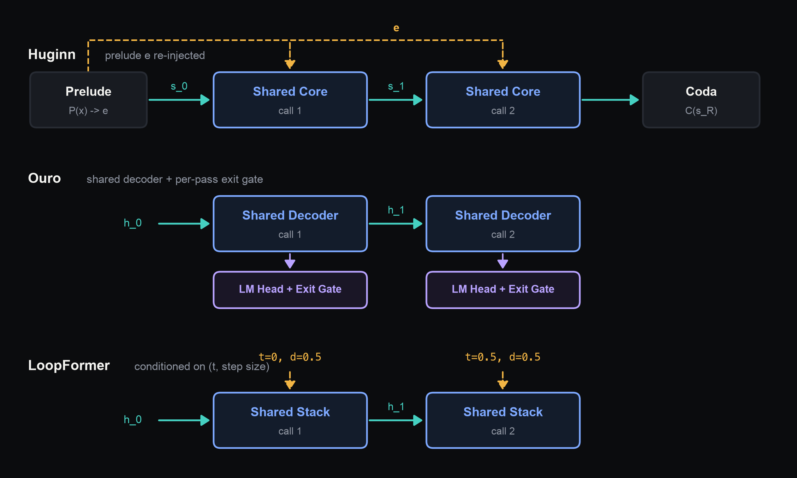
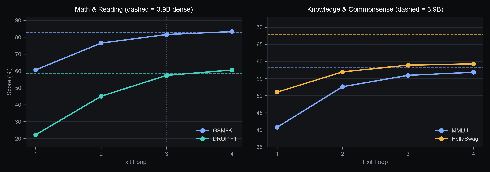
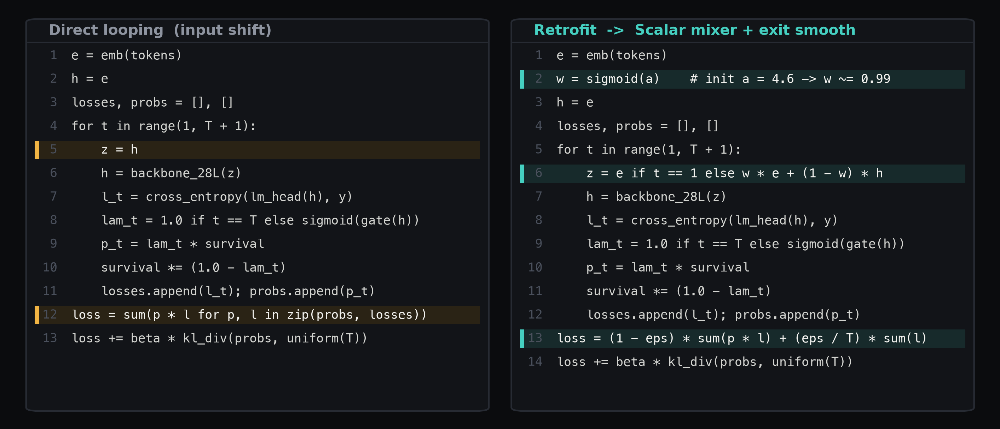
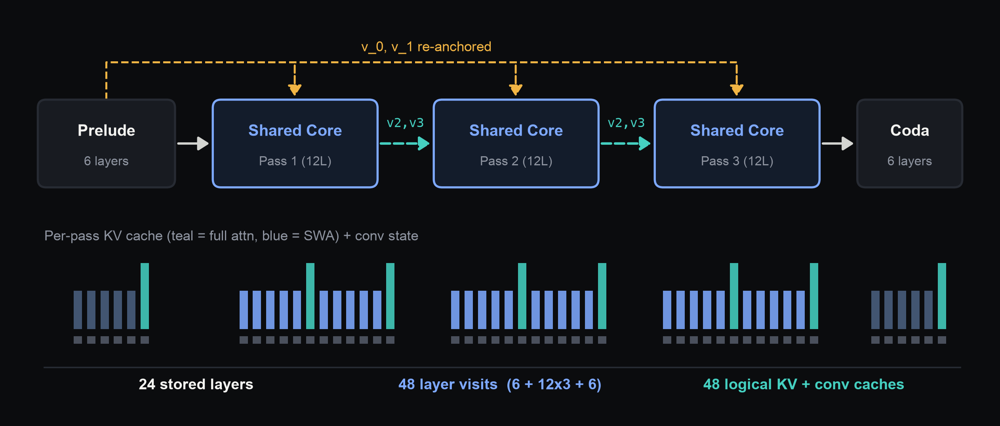
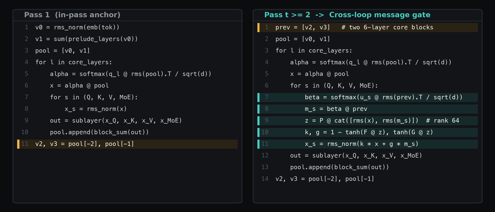
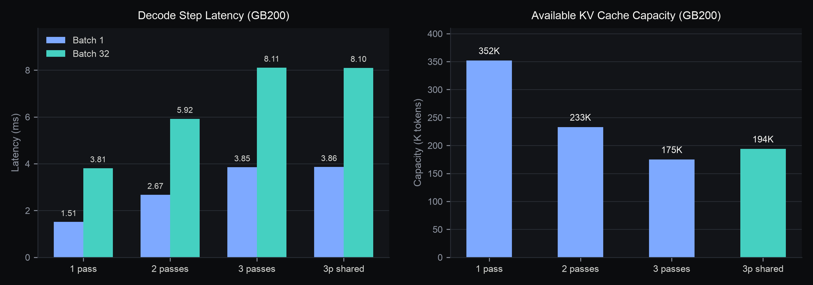

Loop Transformer 学习：原理、流派与分析
写在前面，最近在学LLM，Loop Transformer似乎非常火，据说a%和o家都用上，以及传言CoT是那种看不懂的玩意就是Loop了，然后TML也开源了LooP Transformer: lnKling 2.0 Mini，以及GLM-5.4也是，那么便试试看过一遍Loop Transformer，学习一遍。
Loop Transformer是什么？为什么会选择“循环”？
Loop Transformer不再继续单独考虑把网络叠高、给每一层配一套独立权重，而是把中间那几层拎出来，拿着同一套参数反复跑很多遍（有点像Diffusion和DLM，但迭代发生的轴不一样）。Loop Transformer是在深度（计算量）轴上循环，序列维度上依然是标准的并行Self-Attention和因果掩码，只是同一个token在吐出最终预测之前，要在模型内部重复经过一部分参数而已。相较于标准Dense Transformer，它不再把参数量和计算量死死绑定在一起，而是在恒定参数量前提下scaling计算深度，直觉上和隐空间里的CoT类似。
那么这篇blog主要想了解这些问题：三段式结构（浅层，中间层（负责Loop），深层）怎么接才不漂移，不同训练流派（截断反传、多轮监督退出门、连续步长自蒸馏）的梯度行为分别是什么，循环深度在Diffusion模型（Looped-DiT）里为什么反而比加去噪步数更划算，参数共享在缩放律上的真实折算率是多少，以及落到KV Cache、显存带宽和社区实测时到底值不值。
1. 基础结构：三段式、轮次条件与层数口径
1.1 三段式定义：Prelude、Recurrent Core与Coda
大多数Loop Transformer [1, 2, 3]都可以拆成三段：$P$（Prelude，前奏）、$R_\theta$（Recurrent Core，共享循环核）、$C$（Coda，尾声）。给定输入token序列$x$，前向过程写成：
$$ e = P(x), \qquad h_{r+1} = R_{\theta}(h_r, e), \qquad \mathrm{logits} = C(h_R), \quad r = 0, \dots, R-1. $$$P$对每个token只运行一次，把输入embedding映射成上下文表征$e$（可以理解为encoder）。$R_\theta$拿着同一套参数$\theta$反复执行$R$轮。架构上的第一个分叉在于每轮要不要把$e$重新喂回去，如果是标准的Loop Transformer则不需要，但是其他的：Huginn [1]每轮都把$e$拼回输入，让循环状态始终能看到原始表征；Ouro [2]每轮只吃上一轮的隐藏态$h_r$，靠残差连接和归一化守住信息。$C$负责最后投影到词表空间，也有模型（如Ouro）给每一轮都挂上共享的LM head，用于多轮监督或动态早退。
序列轴和循环轴是正交的。每一轮内部依然按序列维度做因果Self-Attention，循环只发生在纵向的计算深度上。

1.2 早期脉络、轮次条件与预算控制
早年两项工作定下了循环深度的两个视角。Universal Transformer [4]把共享的Self-Attention和FFN放进循环，同时注入位置编码和当前步数（timestep）编码，并引入ACT（Adaptive Computation Time）让不同token在不同步数停下来。但在同步批处理推理里，单个token逻辑上早退后，整条序列的物理执行轮数仍受最慢的那个token制约。Giannou等人 [5]则手工构造了Attention和FFN权重，证明共享参数配上状态维护可以模拟指令执行。不过手工构造属于上帝视角，无监督预训练能否自发学出迭代算法，得看后续大模型的实证。
共享层在所有轮次使用同一组权重。如果不给轮次提示，模型就必须在隐藏状态$h_r$里一边存语义、一边腾出维度记“现在跑到第几轮了”。TMLT [6]给共享层加了timestep编码和条件缩放（类似AdaLN）。LoopFormer [7]多传了一个步长$\Delta$：同样从$t=0$出发，走细步长$\Delta=0.125$和粗步长$\Delta=0.5$时，仅靠当前进度$t$无法区分这一步的更新幅度，把$\Delta$作为显式条件喂进去后，模型就能按预算调节单轮跨度。推理预算大致分成三种策略（表 1）。
| 策略 | 代表模型 | 推理预算机制 |
|---|---|---|
| 固定轮数 | 生产版Inkling 2 Mini [3] | 出厂写死跑3轮，计算图静态，最易做内核融合。 |
| 外部指定轮数 | LoopFormer [7] / TML研究版 [8] | 请求端传入轮数（LoopFormer还可传入步长表）。 |
| 逐Token动态早退 | Ouro Exit Gate [2] | 每个位置算退出概率，按累积概率阈值截断。 |
表 1：三种推理预算控制方式对比。
1.3 物理层数与执行层数
对比Loop模型时，存储的物理层数和实际前向执行的访问层数分开表示为：
$$ L_{\mathrm{physical}} = a + k + b, \qquad L_{\mathrm{executed}} = a + Rk + b, $$其中$a, k, b$分别为Prelude、Core、Coda的物理层数。Huginn [1]是$2 + 4R + 2$，跑32轮时物理只有8层，实际执行132层；Inkling 2 Mini [3]是$6 + 12R + 6$，跑3轮时物理24层，实际执行48层。和$a+k+b$层比属于同参数容量对照，和$a+Rk+b$层比属于同计算深度对照（按照目前主流来说，其实2-3轮收益就收敛了，再多也没用）。然后，一些加速也是很神奇，比如GLM-5.4 loop一次只多10%计算量，这是因为他DSA的KV Cache被缓存了的缘故，即当前隐藏状态投影到新的查询，直接去然后直接去只读loop 1已经写好的那份KV Cache。
2. 三种主流训练范式：Huginn、Ouro与LoopFormer
2.1 Huginn：输入重注入、截断反传与两次失败记录
Huginn-0125（3.5B） [1]由2层Prelude、4层共享Core和2层Coda组成，隐藏维$h=5280$，55头（每头96维），MLP中间维17920。状态递推为：
$$ s_0 \sim \mathcal{N}(0, \sigma^2 I), \qquad e = P(x), \qquad s_{r+1} = R_{\theta}\!\left(A[s_r; e]\right), \qquad \hat{y} = C(s_R). $$初态$s_0$从截断正态分布采样（方差$2/5$），每轮将$s_r$与$e$拼接后经线性适配器$A \in \mathbb{R}^{h \times 2h}$压回$h$维送进共享核。但感觉这个是真像Diffusion还有个什么初始噪声的玩意。然后，归一化采用Sandwich RMSNorm，每个子层残差分支前后都有归一化：
$$ u = n_2\!\left(x + \mathrm{Attn}(n_1(x))\right), \qquad y = n_4\!\left(u + \mathrm{MLP}(n_3(u))\right). $$初始化尺度按有效执行深度$\ell = 2 + 4 \times 32 + 2 = 132$计算：普通权重方差$2/(5h)$，输出投影方差$1/(5h\ell)$，embedding输出乘$\sqrt{h}$。这里有个很直接的数值原因：如果不按$\ell$缩放输出投影，经过$R$轮共享残差叠加后，隐藏态方差会随$\ell$线性放大，把激活迅速推向饱和区。
训练轮数从重尾的log-normal Poisson分布采样（目标参数$\bar{r}=32$），工程上改成每个micro-batch及所有worker同步用同一轮数，避免慢节点拖累。为了控制激活显存，反向传播只穿透最后$K=8$轮，前$R-K$轮在no_grad下前向。把总损失对Prelude参数$\theta_P$的梯度展开就能看清它为什么训得动：
哪怕前面$R-K$轮截断了梯度，只要最后$K$轮每次都读取带梯度的$e$，Prelude依然能稳定收到多条短路径传回的梯度。主模型在4096个AMD GPU die上训了约795B（0.8T）tokens，BF16，全局batch约16M tokens。但某种意义上来说，这种做法其实相当于舍弃了一些端到端的训练增益。
这篇论文公开了两次失败实验（Bad Run 1 & 2），对应两种典型退化：
- Bad Run 1（token维坍缩）：使用无参数RMSNorm、无embedding缩放、直接加法注入以及$4\times 10^{-4}$峰值LR。同一序列不同位置的表示相关性迅速趋近1，模型失去位置区分度，loss停滞。
- Bad Run 2（轮间旁路 / 摸鱼）：加上缩放、线性适配器和普通pre-norm后，token相关性在150步后恢复，总loss正常下降，但评测1轮和32轮的验证集PPL几乎无差。原因在于梯度更偏好走短路径$e \to s_R$，Core学会了忽略上一轮状态$s_r$，直接拿$e$做单步预测。
主实验换回Sandwich Norm并降低LR后，后续750B tokens未再出明显loss spike，同一checkpoint的零样本分数随轮数提升，在一系列评测（ARC-E，ARC-C，HellaSwag等）上，增益主要落在4到16轮，16到32轮趋于饱和。
2.2 Ouro：多轮监督、退出门梯度与“记忆vs组合”
Ouro [2]有1.4B（24层）和2.6B（由24层复制到48层upcycle而来）两个规格，宽2048，MHA + SwiGLU + RoPE。每轮跑完直接接共享LM head算词表分布，同时挂一个共享Exit Gate输出条件退出概率$\lambda_t \in (0, 1)$，无条件退出分布为：
$$ p_t = \lambda_t \prod_{j=1}^{t-1}(1 - \lambda_j), \qquad \lambda_T = 1, \qquad \sum_{t=1}^{T} p_t = 1. $$比如前三轮$\lambda$为0.20、0.25、0.50，最后一轮强制1.0（必须退出去推理了），实际四轮退出占比是0.20、0.20、0.30、0.30。
第一阶段联合训练主干与退出门，目标函数写成各轮交叉熵$\ell_t$的期望减熵正则：
$$ \mathcal{L}_{\mathrm{stage1}} = \sum_{t=1}^{T} p_t \ell_t - \beta H(p) = \sum_{t=1}^{T} p_t \ell_t + \beta\,\mathrm{KL}(p \,\|\, U) - \beta \log T. $$这里有两个数学细节很关键。第一，它是对各轮交叉熵取期望$\sum_t p_t \ell_t$，而不是先把各轮预测概率混成混合分布再取负对数$-\log \sum_t p_t q_t(y)$；由Jensen不等式，$\sum_t p_t (-\log q_t) \ge -\log \sum_t p_t q_t$，前者给每一轮的独立预测施加了更紧的上界，避免各轮之间互相“搭便车”。第二，看$\mathcal{L}_{\mathrm{stage1}}$对$p_t$的最优解（拉格朗日乘子法可得）：
$$ p_t^{\star} = \frac{\exp(-\ell_t / \beta)}{\sum_{k=1}^{T} \exp(-\ell_k / \beta)}. $$这就解释了为什么$\beta$稍微偏小就会坍塌：只要训练初期第1轮的$\ell_1$比深轮小一点，softmax温度$\beta$太低就会把$p_1^\star$迅速推向1，进而让深轮的梯度权重$p_t \to 0$，形成正反馈死锁。
第二阶段冻结主干，专训退出门。用第$t$轮相对第$t-1$轮的实际loss降幅构造软标签，用二元交叉熵拟合继续概率$1 - \lambda_t$：
$$ I_t = \max(0,\, \ell_{t-1} - \ell_t), \qquad w_t = \sigma\!\left(50\,(I_t - 0.005)\right). $$在平均2.5轮预算下，专训退出门在MMLU上比第一阶段自带的退出门高约2个百分点（约66% vs 64%）。预训练共约7.7T tokens。阶段1a（3T，4K）最初跑8轮，训练中频繁出现loss spike和梯度震荡；阶段1b（3T）退回4轮、batch拉到8M、$\beta$从0.10降到0.05，并分出2.6B分支（48层$\times$ 4轮，执行层数与24层$\times$ 8轮同为192，但权重可以分家各自学习），后续接1.4T CT annealing、20B LongCT（64K，RoPE base 1M）和300B Mid-training。发布版Base扫推理轮数的结果见表 2：1到3轮贡献绝大部分增益，第4轮见顶，超过训练轮数外推（5–8轮）普遍回落（1.4B Thinking版在AIME 2024上从第4轮65.00跌至第8轮38.67）。
| 推理轮数 | 1.4B ARC-C | 1.4B MMLU | 2.6B ARC-C | 2.6B MMLU |
|---|---|---|---|---|
| 1 | 37.63 | 41.21 | 47.95 | 51.55 |
| 2 | 54.86 | 60.43 | 62.37 | 67.63 |
| 3 | 59.47 | 66.71 | 65.36 | 73.57 |
| 4 | 60.92 | 67.45 | 66.38 | 74.60 |
| 5 | 58.96 | 66.64 | 65.36 | 74.43 |
| 8 | 58.19 | 64.49 | 64.76 | 72.24 |
表 2：Ouro Base模型随推理轮数的变化（训练上限4轮，5–8轮为外推，%）。
2.3 LoopFormer：连续轨迹、双路径自蒸馏与实现差异
LoopFormer [7]把从输入到读出的隐态演化放到单位时间区间$[0, 1]$上（类似flow matching里的ODE离散化）：
$$ t_0 = 0, \qquad t_i = t_{i-1} + \Delta_i, \qquad \sum_{i=1}^{M} \Delta_i = 1, \qquad h_i = \Phi_K(h_{i-1}, t_{i-1}, \Delta_i). $$细路径走$L$个$1/L$等步长，粗路径走$M \le L$步。$t_{i-1}$和$\Delta_i$各自做256维正弦余弦Fourier特征编码，经两层MLP投影相加后，通过AdaLN调制控制每层Attention和FFN的缩放与残差门控。训练时每个batch跑一条满步长细路径和一条随机抽$S \in \{1, \dots, L-1\}$步的粗路径，损失为：
$$ \mathcal{L} = \mathrm{CE}_{\mathrm{long}} + 0.1\,\mathrm{CE}_{\mathrm{short}} + 0.1\,\mathrm{MSE}\!\left(h_{\mathrm{short}},\, \mathrm{stopgrad}(h_{\mathrm{long}})\right). $$因为对齐只发生在终点$t=1$，短路径本质上在学一个少步蒸馏器（few-step shortcut）。固定4轮（$L=8$，共$\binom{7}{3}=35$种合法整数切分）下，步长分配差异能让The Pile PPL跨度达1.4、10项零样本均分差约1.3个点，通常前粗后细表现更好。代价是每个batch多跑一条期望长度约$L/2$的短路径，循环算量约1.5$\times$。然后把步数从50k压到34k对齐总FLOPs后，LoopFormer（10.71 PPL / 44.21%）略低于固定深度TMLT（10.38 / 44.69%）和24层独立Base（9.49 / 45.27%）。
论文和开源实现会有一些不同，正文§3.3有一处将一致性目标写成logits，而Algorithm 1与train.py实际对final RMSNorm后的终点隐藏态算MSE，此外，utils.py中的短路径采样采用逐次条件均匀抽样而非全组合均匀抽样，例如$L=8, S=3$时，第一步从$\{1,\dots,6\}$均匀抽，因此$(6,1,1)$的概率为$1/6$，而$(1,6,1)$只有$\frac{1}{6}\times\frac{1}{6} = 1/36$（(6, 1, 1)里的三个数字，代表短路径的3轮（$S=3$）各自跨越的“最小步长格数”，LoopFormer把从$t=0$到$t=1$的整条计算轨迹等分成$L=8$个最小格子（每格长$1/8$），现在要在$S=3$轮内走完这8格（每轮至少走1格），三个数字之和必须等于$L=8$，比如第1个数6第1轮跨6格，步长$\Delta_1 = 6/8$（从$t=0$一步跳到$t=6/8$），第2个数1，第2轮跨1格，步长$\Delta_2 = 1/8$（从$t=6/8$走到$t=7/8$），第3个数1，第3轮跨1格，步长$\Delta_3 = 1/8$（从$t=7/8$走到$t=8/8=1$））。最后，附录写调制层最后一层零初始化，但代码里GPT构造函数紧接着调了self.apply(self._init_weights)，直接把零初始化覆盖成了$\mathcal{N}(0, 0.02^2)$。
3. Diffusion里面的Loop Transformer
传统DiT想提质量，要么加大模型参数量，要么增加去噪步数（NFE）,最近这篇工作刚刚放出来，可以在Diffusion里面也使用Loop Transformer，即Looped-DiT [9]，它在pixel-space MMDiT（MiniT2I）上验证了第三条轴：在每一个去噪步内部，把中间共享Transformer块反复循环$N$轮，再去推进采样器：
$$ h^{(0)} = \mathcal{A}(h_{\mathrm{input}}), \qquad h^{(r)} = \mathcal{B}\!\left(h^{(r-1)}\right)\ (r=1,\dots,N), \qquad \hat{x}_0 = \mathcal{C}\!\left(h^{(N)}\right). $$如果直接把MMDiT塞进循环（naive looping），论文里的ridge-regression探针发现了一个非常具体的退化现象：随着推理循环加深，线性可解码的局部空间信息被反复的注意力更新逐步侵蚀，图像质量先升后降。作者用两个组件解决了这个问题。
3.1 Deep Supervision（全轮次Clean-Image Flow Matching监督）
只监督最后一轮$h^{(N)}$时，梯度要穿过全部$N$轮反传才能到达浅轮。Looped-DiT把共享的尾段$\mathcal{C}$接到每一轮中间状态$\hat{x}_0^{(n)} = \mathcal{C}(h^{(n)})$，在同一带噪输入$x_t = t x_0 + (1-t)\tilde{\epsilon}$下，对每一轮都计算clean-image prediction的flow-matching损失（这是不是非常像REPA系列的Interval Guidance，感觉是不是可以训练的时候第N轮监督第N-1轮，第N-1轮监督N-2轮以此类推这样子）：
$$ \ell_n = \mathbb{E}\!\left[\frac{\|\hat{x}_0^{(n)} - x_0\|_2^2}{d_x\, c(t)^2}\right], \quad c(t) = \max\{1-t, \tau\}, \qquad \mathcal{L} = \sum_{n=1}^{N} w_n \ell_n. $$消融表明Final + Mean权重$(w_1,w_2,w_3,w_4) = (\frac{1}{3},\frac{1}{3},\frac{1}{3},1)$优于指数衰减权重$(\frac{1}{8},\frac{1}{4},\frac{1}{2},1)$，而且不仅提升了4轮效果，还让模型在1–8轮外推区间保持稳定（单轮甚至反超非循环基线）。
3.2 Adaptive Looping与“加循环vs加NFE vs文本CoT”对照
基于稳定的多轮表现，作者还训了一个极轻量的跨注意力门控网络（4个可学习query + MLP），在每轮后预测继续循环的最大未来边际收益：
$$ y_r = \max\!\left\{0,\; \max_{k=r+1,\dots,N} \frac{\ell_r - \ell_k}{k - r}\right\}, \qquad r = 1, \dots, N-1. $$推理时只要预测值$\hat{y}_r > \lambda$就继续循环，否则提前退出，平均2.70轮就能追平固定4轮。表三的实验结果能看出来收益还是非常明显的。
| 模型配置 | 训练GFLOPs | 推理GFLOPs | 参数(M) | 有效深度 | DeepSup | 均分$\uparrow$ |
|---|---|---|---|---|---|---|
| MiniT2I B/32（基线） | 441 | 146 | 260 | 17 | $\times$ | 55.2 |
| Deeper MiniT2I B/32 | 809 | 267 | 473 | 32 | $\times$ | 57.7 |
| Wider MiniT2I B/32 | 805 | 268 | 489 | 17 | $\times$ | 58.6 |
| Deeper + DeepSup | 1,246 | 267 | 473 | 32 | $\checkmark$ | 58.1 |
| Looped-DiT B/32 | 1,246 | 267 | 260 | 32 | $\checkmark$ | 59.1 |
表 3：Looped-DiT B/32在同参数、同推理算力与同训练算力下的消融对照（Table 2）。
4. 训练稳定性、老模型改造与缩放规律
4.1 Closing the Loop：故障诊断与Qwen3-1.7B改造
Closing the Loop [10]沿用Ouro-1.4B（24层$\times$ 4轮）把循环预训练里的两类死法拆解得很清楚。第一类是退出门首轮坍塌：$\beta=0.05$时全程塌在$p_1=1.00$；$\beta=0.10\sim 0.15$配1K步warmup才能将$p_1$稳在0.95以下；$\beta=0.50$不塌但明显抬高最终LM loss。第二类是归一化引起的深层梯度消失：第二轮各层对共享参数的梯度剖面显示，Pre-norm首尾仅差约8倍，而Post-norm和它测的某版Sandwich-norm中第0–22层梯度比第23层小8到16个数量级，即便warmup拉到10K，4轮Post-norm仍死在7.4的loss平台；另外读出前的final RMSNorm去掉（Identity）会让梯度范数炸到$10^6 \sim 10^7$。

同参数（1.4B密集）与同推理算量（Loop 3与3.9B密集均为7.60 GFLOP/token）对比见表 4：数学（GSM8K、MATH）和阅读推理（DROP）上1.4B跑3–4轮追平或略超3.9B，常识和知识（HellaSwag、MMLU-Pro）仍明显落后。
| 任务 | 密集1.4B | Loop 1 | Loop 2 | Loop 3（同算量） | Loop 4 | 密集3.9B |
|---|---|---|---|---|---|---|
| GSM8K | 69.14 | 60.65 | 76.50 | 81.58 | 83.32 | 82.79 |
| MATH | 54.10 | 44.18 | 60.90 | 63.64 | 63.80 | 64.54 |
| DROP F1 | 38.59 | 22.20 | 45.02 | 57.40 | 60.57 | 58.57 |
| MMLU | 46.52 | 40.77 | 52.61 | 55.93 | 56.84 | 58.15 |
| HellaSwag | 57.28 | 51.02 | 56.94 | 58.92 | 59.29 | 67.91 |
表 4：Closing the Loop同参数与同推理算量（Loop 3 vs 3.9B）逐轮对照（%）。
此外，针对已有预训练模型改造（把Qwen3-1.7B的28层转成3轮循环），直接把第1轮输出$h_1$原封不动塞回第1层时，原本只见过token embedding分布的第1层会因为输入分布剧变导致第2、3轮loss反而高于第1轮。作者用“可学习标量混合器+出口平滑”解决了这个问题（图 3）：
$$ z_1 = e, \quad z_t = w e + (1-w) h_{t-1}, \quad w = \sigma(a), \quad a_{\mathrm{init}} = 4.6 \implies w_{\mathrm{init}} \approx 0.99005, $$ $$ \mathcal{L}_{\mathrm{LM,smooth}} = (1-\varepsilon)\sum_{t=1}^{T} p_t \ell_t + \frac{\varepsilon}{T}\sum_{t=1}^{T}\ell_t, \qquad \varepsilon = 0.05. $$先交代每个符号的含义：$e = \mathrm{Emb}(x)$是原始的token embedding，$h_{t-1}$是整套28层Transformer跑完第$t-1$轮后的输出隐藏态，$z_t$是第$t$轮真正送进这28层的混合输入，$a$是一个可学习标量，$w = \sigma(a)$是Sigmoid权重。改造刚启动时$w \approx 0.99$，第2、3轮输入$z_t \approx 0.99e + 0.01h_{t-1}$几乎退回原模型的embedding分布，训练过程中再慢慢学着调低$w$，把上一轮状态$h_{t-1}$平滑融进来。
第二个式子解决的是中间轮被门控饿死的问题：其中$p_t$是退出门给出的第$t$轮退出概率，$\ell_t$是第$t$轮的交叉熵损失，$T=3$是总轮数。训练中如果中间轮的$p_2 \to 0$，第2轮就会失去梯度，挂上每轮独立LoRA后第2轮输出直接发散（loss飙升至约10 nat）。加上$\varepsilon=0.05$的均匀平滑项后，即便$p_t=0$，每一轮也至少保留$\frac{\varepsilon}{T} \approx 1.67\%$的直接交叉熵梯度下界。仅用60B指令数据（约占原预训练总算力的0.5%），固定2轮下GSM8K从66.64升至70.96，MATH从51.14升至53.34，MMLU-Pro从30.76升至34.52（配每轮独立rank-32 LoRA达36.24）；换成84B普通网页数据则收益很弱（GSM8K 60.12$\to$61.87，MATH几乎不动）。

4.2 Parcae与Iso-depth：线性收缩分析与参数折算率
Parcae [11]借鉴SSM，把递推拆成显式线性收缩通道、输入通道和非线性残差：
$$ h_{t+1} = \bar{A} h_t + \bar{B} e + \bar{R}(h_t, e), \qquad A = \mathrm{diag}\!\left(-\exp(\log A)\right), \quad \bar{A} = \exp(\Delta \odot A). $$其中$h_t$为第$t$轮隐藏态，$e$为Prelude输出，$\bar{R}(h_t,e)$为共享Transformer的非线性更新，对角矩阵$A$的元素严格为负，$\Delta_i > 0$是可学习步长向量，因此每个通道的衰减系数都满足$0 < \bar{A}_i < 1$，谱半径$\rho(\bar{A}) < 1$；忽略非线性项时存在唯一稳态不动点$h^\star = (I - \bar{A})^{-1}\bar{B}e$。
举一个具体数值例子看不同通道如何衰减：假设两个通道分别学出慢衰减参数（$A_1 = -0.2, \Delta_1 = 0.5$）与快衰减参数（$A_2 = -2.0, \Delta_2 = 1.0$）：
- 慢衰减通道：$\bar{A}_1 = e^{-0.1} \approx 0.905$，经过8轮循环后初始状态还保留$0.905^8 \approx 45\%$，适合在多轮间保持长期上下文或全局草稿；
- 快衰减通道：$\bar{A}_2 = e^{-2.0} \approx 0.135$，仅2轮后初始分量就衰减到$0.135^2 \approx 1.8\%$，几乎只保留最新一轮的输入$\bar{B}e$与非线性更新，适合做局部即时改写。
顺序消融里，原本发散的140M模型加上$\bar{A}$约束即可收敛，再改为逐序列独立采样轮数，浅轮（$T=1$）验证loss从8.99降至3.38。但注意这只约束了线性部分，Transformer非线性项的Jacobian累积依然可能在长训练后期失稳，1.3B初始版在约150K步后照样出现了状态爆炸。
Iso-depth [12]跑了116次实验、覆盖6档总FLOPs，在相同执行深度与相同每token算量下拟合出共享参数的等价缩放律（$R^2 = 0.997$）：
$$ L = E + A \left(N_{\mathrm{once}} + r^{\phi} N_{\mathrm{rec}}\right)^{-\alpha} + B D^{-\beta}, \qquad \phi = 0.46 \in [0.41, 0.53]. $$式中$E$为不可约语言熵下界，$N_{\mathrm{once}}$和$N_{\mathrm{rec}}$分别为只执行一次的非共享参数量与被循环$r$次的共享参数量，$D$为训练token总数，$A,B,\alpha,\beta$为拟合系数。
同等flops的情况下很难打平非loop模型，但是可以在收益达到边界时提升上限：循环$r=4$轮时，$4^{0.46} \approx 1.86$，在降低语言模型验证loss上只等价于把共享块参数扩了1.86倍，远不到4倍。论文里的具体例子：410M循环模型loss追平580M非循环模型，但训练总算力相当于约1B非循环模型。后续消融测出，用截断反传省训练FLOPs时$\phi$掉到0.38；换成多流残差（Hyperconnections）后$\phi$升至0.65（知识子集达0.80）。
5. 稀疏循环（Loop + MoE）与Inkling 2 Mini
Dense模型循环时每轮过同一套FFN；换成MoE后，每轮可以按更新过的隐藏态重新top-k路由，同一token在不同轮次调用不同专家组合，一份专家库能展开更多动态路径。
5.1 Sparse Loops、Loopie与SMELT
Sparse Loops [13]在8专家top-2、两轮循环下测到25%–53%的token两轮选出的专家完全不重合，完全重合的仅4%–14%。Loopie（20B-A2B / 6B-A0.6B） [14]改成逐个物理层连跑两次（Layer 1 $\to$ Layer 1 $\to$ Layer 2 $\to$ Layer 2），避免流水线并行里的跨阶段往返，省出的显存让microbatch从1翻倍到2、梯度累积减半，等墙钟下将20B模型扩至宽2304、27$\times$2层（不过最终榜单成绩叠了约3.5T预训练、2T指令推理数据和RL）。
SMELT [15]在物理$L$层中段取$m=L/2$层循环两次（执行$1.5L$层），循环分支乘$1/r$缩放残差，并通过收窄宽度、增加专家，把每token FLOPs、非embedding总参数和KV占用同时对齐到1%–3.9%以内。它建立了包含稀疏度的缩放损失模型：
$$ \mathcal{L} = E + \frac{A(1-S)^b}{F^a} + \frac{K}{D^c}, \qquad C = F D. $$这里$C$为总训练算力预算（总FLOPs），拆成模型单token训练算力$F$（FLOPs/token，表征活跃计算规模）与总训练数据量$D$（token数）的乘积；$S = 1 - \frac{F/F_0}{N/N_0}$是按FLOP等效活跃参数定义的有效稀疏度（$N$为模型总参数，$F_0,N_0$为校准基线的单token算力与参数，$1-S$越小代表越稀疏）；$E$是语言建模的不可约熵下界；$A,K$和正指数$a,b,c$是拟合参数，分别对应模型容量误差项与数据量不足误差项。将$D=C/F$代入上式并对$F$求一阶导令其为0，可得给定总算力$C$和稀疏度$S$时的最优单token算力分配$F^\star$以及最优前沿斜率$\gamma$（满足$\mathcal{L}^\star - E \propto C^{-\gamma}$）：
$$ F^{\star} = \left(\frac{a A (1-S)^b C^c}{c K}\right)^{\frac{1}{a+c}}, \qquad \gamma = \frac{ac}{a+c}. $$基线拟合$\gamma \approx 0.237$，SMELT提升至$\gamma \approx 0.250$，$10^{21}$FLOPs下等loss前沿可省14.7%–18.0%训练算力；96对近似匹配配置里DCLM Completion赢96对、Core赢83对。机制分析显示504专家选top-8两轮平均只重合2–3个专家，Q/K余弦相似度0.89–0.93，V仅0.65–0.74，说明第二轮看的token位置相近，写入的内容已更新。
5.2 TML Inkling 2 Mini的架构、门控方程与机制归因
TML发布的固定三轮Inkling 2 Mini [3]和可变轮数研究版TML-d24-varloop-research [8]有三个参数口径：26.4B存储参数（约20GB，前20层专家前向全程NVFP4，后4层MXFP8）、3.4B活跃参数、5.4B weight activations/token。架构为$6 + 12\times 3 + 6 = 48$次层访问（物理24层，宽2304，24 Q / 8 KV头，128路由专家top-8，20层滑窗SWA=1024配核长4短卷积+4层全注意）。

Inkling 2 Mini最核心的设计在于怎么把上一轮的思考结果传给下一轮，同时又不丢失原始token信息。它的24个物理层按每6层划分为一个残差块，先定义清楚四个块向量：$v_0$：归一化后的原始token embedding，$v_1$：Prelude（第1–6层）这6层残差增量的累加和，$v_2^{(t-1)}$与$v_3^{(t-1)}$：共享循环核Core（第7–18层，共12层）被平分成前6层（7–12层）与后6层（13–18层）；跑完第$t-1$轮循环后，这两段各自累积出来的6层输出和就是$v_2^{(t-1)}$和$v_3^{(t-1)}$。到了第$t$轮（$t \ge 2$）执行某一个核心子层时，输入构造分三步（图 5）：第一步，用本轮的depth-attention对$v_0$、$v_1$以及本轮已经算出的部分块和做加权求和，得到本轮基础输入$x \in \mathbb{R}^d$（这一步相当于每轮都重新锚定原始输入，防止越转越偏）；第二步，针对当前层的Q、K、V、MoE四个入口（记为$s \in \{Q,K,V,\mathrm{MoE}\}$），各自用一个可学习向量$u_s$去给上一轮留下的两个核心块$v_2^{(t-1)}, v_3^{(t-1)}$打分做2选softmax，加权合成跨轮消息$m_s = \beta_{s,2}\hat{v}_2^{(t-1)} + \beta_{s,3}\hat{v}_3^{(t-1)}$；第三步，把本轮输入$x$和跨轮消息$m_s$拼接后经低秩矩阵$P \in \mathbb{R}^{64 \times 2d}$压到64维$z$，再经$F,G \in \mathbb{R}^{d \times 64}$生成逐通道门控$\kappa$和$\gamma$完成融合：
$$ z = P[\mathrm{RMSNorm}(x),\, \mathrm{RMSNorm}(m_s)], \qquad \kappa = 1 - \tanh(Fz), \qquad \gamma = \tanh(Gz), \qquad x' = \kappa \odot x + \gamma \odot m_s. $$这里的设计意图非常明确：$\kappa \in (0, 2)$可以放大或抑制本轮锚定流$x$，$\gamma \in (-1, 1)$允许取负值，意味着模型不仅能把上一轮的结论“加”进来，还能把上一轮发现错误的成分“减”出去（它不是和为1的凸组合）。训练接入循环时先将消息门关死（$\gamma \approx 0$），再逐步放开学习跨轮传话。

训练链路上，中段循环在28项评估中赢尾段循环27项，等loss下非循环需约1.51–1.91$\times$计算（512K agentic trace约2.4$\times$推理算力）；中训把每层384个专家按频率剪到128个，再拿更大内部模型蒸馏1T tokens修复，后接SFT和2.2T tokens RL。可变轮数评测中，Think Fast无CoT直答从1轮16秒拉到3轮37秒；N-Hop查找外推到10轮仍在涨；GPQA各深度均答对的同一批题里，1轮平均输出3,703 tokens，5轮压到1,661 tokens。
开源之后，专注大模型机制可解释性的研究机构Goodfire专门对Inkling 2 Mini做了跨轮信号拆解 [16]。他们将融合后的输入$x'$分解为每个历史子层写入向量的贡献$c_w$，用点积份额$a_w = (c_w \cdot x')/\|x'\|^2$衡量每层贡献，结果发现隐藏态的2027号维度在RMSNorm后平均激活高达$+32.4$，独自占据2304维平方范数的约46%（$32.4^2/2304 \approx 0.456$）。前两轮它在第18层打出正峰，第三轮转负向写入；第二轮第13层四路跨轮读取的softmax分差中，该坐标贡献了6%–19%，相当于模型自发学出的跨轮状态标记位。探针方面，直接套词表头的logit lens主要在每轮末尾才可解码，tuned lens和coda lens在循环中途即可稳定读出最终答案。
6. 成本降低：KV Cache、训练期缓存分工与投机加速
6.1 权重共享下的KV Cache
同一token在第$p$轮的隐藏态$h_p$不同，投影出的K、V和短卷积状态也不同，默认部署必须按逻辑层数分别存缓存。对纯全注意GQA栈，每token KV占用为$2 L_{\mathrm{executed}} n_{\mathrm{KV}} d_{\mathrm{head}} \cdot \mathrm{bytes}$，并不因权重共享而缩小。Inkling 2 Mini物理24层在vLLM [17]里要注册48个逻辑KV Cache和48个短卷积状态缓存（40滑窗+8全注意）。单卡GB200（TP1、4K上下文、仅forward）实测见图 6：1轮到3轮延迟涨2.1–2.5$\times$，可用KV容量腰斩（352K$\to$175K）。vLLM为研究版提供了一个实验性显存节省开关loop_share_cache：默认3轮循环会给同一物理层分配3个独立KV槽位，开启该开关后3轮强制覆写同一个KV槽位（后一轮覆盖前一轮，下一个token只读前面token最后一轮写下的KV）。但因为20层滑窗注意力里每轮独立的短卷积状态（conv state）仍无法共用，开启后可用KV容量只从175K小幅回升到194K，延迟基本持平。

6.2 训练期缓存分工（LPT）与跨深度投机（LoopFill）
Ouro推理期直接共享第1轮KV会让GSM8K从78.92跌到18.73（共享最后一轮或平均可维持78.85/78.73）。Looped Prediction Transformer（LPT） [18]则把缓存分工直接写进了训练期的前向计算图里：设当前解码到第$t$个token，总序列长$T$，循环$R$轮。第1轮（状态轮）正常对全序列做因果Self-Attention，把算出的$(K_{1:t}^{(1)}, V_{1:t}^{(1)})$存成共享的长前缀缓存；从第$r \ge 2$轮（预测轮）起，不再存全长$T$的KV，而是只为最近的$\omega=64$个token维护一个局部滑动窗口缓存$(K_{t-\omega+1:t}^{(r)}, V_{t-\omega+1:t}^{(r)})$。计算第$r$轮注意力时，直接把第1轮的历史长前缀KV与第$r$轮的局部$\omega$窗口KV沿序列维拼接，放进同一个softmax里统一做注意力：
$$ K_{\mathrm{cat}}^{(r)} = \big[K_{1:t-\omega}^{(1)};\; K_{t-\omega+1:t}^{(r)}\big], \quad V_{\mathrm{cat}}^{(r)} = \big[V_{1:t-\omega}^{(1)};\; V_{t-\omega+1:t}^{(r)}\big], \quad \mathrm{Attn}^{(r)}(q_t^{(r)}) = \mathrm{softmax}\!\left(\frac{q_t^{(r)} (K_{\mathrm{cat}}^{(r)})^\top}{\sqrt{d_k}}\right) V_{\mathrm{cat}}^{(r)}. $$由此总缓存条目比值从标准循环的$M_{\mathrm{LT}} = L R T$降为$M_{\mathrm{LPT}} = L[T + (R-1)\omega]$：
$$ \frac{M_{\mathrm{LT}}}{M_{\mathrm{LPT}}} = \frac{L R T}{L\,[T + (R-1)\omega]}. $$在$T=4096, R=5, \omega=64$时缓存缩减约4.7$\times$（5.00$\times \to$1.06$\times$），且在约150M、450M及更大一档的三组参数规模对照中，LPT的PPL与五项任务均分全面反超标准5轮循环模型。把跨轮共享KV的梯度detach后，450M规模5轮PPL从12.33炸到1,527，说明训练期端到端可微的跨轮KV本身充当了把最终loss直接传回第1轮的梯度捷径。
推理调度侧，LoopFill [19]抓住所有轮次共用同一套权重的特性，把浅轮logits和本地/全局后缀树拼成候选树，将不同token、不同深度的节点打包成一个batch塞进共享块并行推进一轮，根节点满$T$轮后按目标分布无损验收。定义归一化接受长度$\gamma = nT / K$（$n$为生成token数，$K$为串行循环步数）。单卡L20X、并发1贪婪解码下Ouro-2.6B / Huginn-3.5B加速5.85$\times$ / 5.13$\times$；温度1.0、并发16时SpecBench加速回落到2.81$\times$ / 2.67$\times$，节点预算$N$从16盲目拉到64反而因废分支变慢。
7. 群讨论中以及自己的理解
自己看了一些微信以及x上的一些交流和讨论，然后list出来一些观点，可以说吸取一些经验吧
- Loop到底是不是HBM受限下的妥协？ 同吞吐量下，loop与直接unroll（展开成独立层）到底谁更强？结合前面Iso-depth算出的等价参数指数$\phi = 0.46$（4轮只折算约$1.86\times$参数），如果硬件HBM充裕、训练和推理都能放得下全量独立权重，直接unroll的容量上限更高。但是对于国内来说，loop在预训练阶段省下的权重显存可以直接换取更大的microbatch和更少的流水线通信，对显存受限的低端卡或国产算力卡（如昇腾
mindspeed-loop路线）反而是一个非常务实的训大模型手段。 - 为什么工程共识收敛在“只loop中间段、2–3次”？这个第一个原因是全网循环太贵，只循环中间$1/3 \sim 1/2$的层、跑2–3次是目前最划算的区间（这与Inkling 2 Mini的$6+12\times 3+6$、SMELT的中段$50\%$循环和GLM-5.4的中段循环高度重合）。此外，循环的增益会随着循环次数上升而快速收敛，没必要考虑什么无限循环，“loop 2–3次差不多，5、6、7、8次就太亏了；一般超过6次必须配TBPTT（截断反传）才训得动。”这也解释了为什么Huginn跑32轮必须截断只反传最后8轮，而Ouro全反传8轮在阶段1a直接震荡被迫退回4轮。
- “针对GLM-5.4，三分之一层loop 2次只多10%开销”是怎么做到的？ 近期首个700B+旗舰级Loop模型（如GLM-5.4，公开宣称在1B、4B、30B到750B逐级验证了Scaling Correctness）引发了大量算力与显存拆解。针对全局稀疏注意力（DSA，管超长上下文$T$，比如128K），loop 1正常用$h^{(l,1)}$算出并写入完整的长上下文KV Cache：$(K_{\mathrm{DSA}}^{(l,1)}, V_{\mathrm{DSA}}^{(l,1)})$，占$O(T)$显存，而loop 2不再给长上下文多存第二份KV，只用新的隐藏态$h^{(l,2)}$投影出新的查询$Q_{\mathrm{DSA}}^{(l,2)} = h^{(l,2)} W_Q$，然后直接去只读loop 1已经写好的那份$(K_{\mathrm{DSA}}^{(l,1)}, V_{\mathrm{DSA}}^{(l,1)})$： $$\mathrm{Attn}_{\mathrm{DSA}}^{(l,2)} = \mathrm{SparseAttn}\!\left(Q_{\mathrm{DSA}}^{(l,2)},\; K_{\mathrm{DSA}}^{(l,1)},\; V_{\mathrm{DSA}}^{(l,1)}\right)$$这就把长上下文的KV显存直接省了一半。
- PPL不占优势是正常现象，别用PPL评判Loop Loop确实在PPL上不占优势，且PPL对长尾事实记忆和参数容量极度敏感，而Capo/Mano与Iso-depth都已经证明，共享权重不会凭空增加每参数约2 bits的静态记忆上限。把Loop当作通用语言建模的PPL刷分器容易失望，它的有效场景在多步推理、泛Coding与长链约束满足上面。
- 纯隐空间做Agent / ReAct为什么难成立？ 探讨用纯隐空间循环替代显式ReAct时，群里直言卡在两个难点上：一是很难单纯训出可靠的latent next-state prediction，二是很难说服工程侧它比直接管理显式上下文（context）强在哪。另一条非常犀利的评论是：“loop一亿次也无法将偏差行为修正分毫。”缺少外部环境反馈或验证器锚点时，模型在隐空间里反复迭代只会放大既有分布偏差，而不会自发纠偏。
- 类似于full attention$\to$sparse attention，一种快的做法是10%续训上Loop、HC融合与YOCO+AttnRes 相比从零预训练承担高昂试错成本，首先预算低（约10%续训预算上Loop），不从零训循环，而是在成熟基座上对中间层做循环改造（类似Closing the Loop的Qwen3改造，以及扩散侧把预训练DiT蒸馏转成可变深度循环的路线），以及未经过RL的基座直接吃蒸馏数据时容易消化不良，加一层中段循环能帮模型更好地吸收推理蒸馏信号。 另一点是中段Loop+类Hyper-Connections（HC）。HC并不是靠堆大量额外参数起作用（它新增的只是几组极小的通道混合权重），核心改动是把传统Transformer单条$d$维残差流扩宽成$n$条并行残差流（比如$n=4$条，总宽$n \times d$），每层通过动态连接权重在这$n$条流之间读写混合。普通单流循环模型每轮必须把原始输入语义、当前迭代进度和中间推理草稿全挤在同一条$d$维向量里，容易互相覆盖；HC扩出多条并行流后，相当于给循环核开了多个独立“草稿槽位”，不同槽位可以分别保留输入锚点和多步中间状态，因此Iso-depth实测几乎不加参数就把共享权重等价指数$\phi$从0.46拉到了0.65。 最后用YOCO加上AttnRes可能是一个可行的方法，因为YOCO天然把全网KV Cache压缩成单份共享表示，解决了循环最麻烦的KV乘法膨胀；AttnRes（类似ARLoop/Loopback的深度注意力残差）则解决跨轮残差累加漂移，两者恰好对准了Loop Transformer当前最大的两个问题。
- 隐空间推理不可监控（CoT Monitorability）,推理藏进循环潜空间省了输出token，但也变成黑盒；模型在隐空间走偏或幻觉时，外部无法像审查显式文本CoT那样定位错误步骤。
- 长思考与复读死循环，看到reddit或者Hacker News很多反馈，循环架构在复杂代码调试、多约束任务和长多轮对话里容易陷入自我拉扯或n-gram复读，对话流畅度有时反而不如同量级Dense模型。
Understanding Loop Transformers: Principles, Paradigms, and Analysis
Preface: I have been studying LLMs recently, and Loop Transformers seem to be everywhere right now. Rumor has it that both Anthropic and OpenAI are using them, and that those unreadable CoT traces are actually from looped architectures. Thinking Machines Lab (TML) also open-sourced a Loop Transformer, Inkling 2.0 Mini, and GLM-5.4 uses looping as well. So I decided to go through Loop Transformers systematically and learn how they work.
What Is a Loop Transformer, and Why Choose “Looping”?
Rather than stacking ever-deeper layers with separate weights for every layer, a Loop Transformer extracts a middle block of layers and executes the same shared parameters repeatedly (somewhat reminiscent of Diffusion models and diffusion language models (DLMs), though iteration happens along a different axis). A Loop Transformer loops along the depth (compute) axis, while the sequence dimension still uses standard parallel Self-Attention with causal masking; each token simply passes through a shared subset of parameters multiple times before producing its final prediction. Compared with a standard Dense Transformer, it decouples parameter count from compute, enabling compute-depth scaling under a fixed parameter budget, which is intuitively analogous to Chain-of-Thought (CoT) reasoning in latent space.
This blog post focuses on the following questions: how to wire the three-stage architecture (shallow prelude, middle looped core, deep coda) without representation drift; how gradients behave across different training paradigms (truncated backpropagation, multi-pass supervised exit gates, continuous step-size self-distillation); why increasing loop depth in Diffusion models (Looped-DiT) outperforms adding more denoising steps; what the true parameter-equivalence exponent of weight sharing is under scaling laws; and whether looping pays off once KV cache, memory bandwidth, and real-world community benchmarks are taken into account.
1. Foundations: Three-Stage Structure, Loop Conditioning, and Layer Accounting
1.1 Three-Stage Definition: Prelude, Recurrent Core, and Coda
Most Loop Transformers [1, 2, 3] decompose into three stages: $P$ (Prelude), $R_\theta$ (shared Recurrent Core), and $C$ (Coda). Given an input token sequence $x$, the forward pass is:
$$ e = P(x), \qquad h_{r+1} = R_{\theta}(h_r, e), \qquad \mathrm{logits} = C(h_R), \quad r = 0, \dots, R-1. $$$P$ runs once per token, mapping input embeddings into a contextual representation $e$ (which can be viewed as an encoder). $R_\theta$ applies the same parameters $\theta$ for $R$ iterations. The first architectural fork is whether to re-inject $e$ at every iteration. A vanilla Loop Transformer does not require re-injection, whereas other designs diverge: Huginn [1] concatenates $e$ back into the input at every step so the recurrent state always retains access to the original representation, while Ouro [2] feeds only the previous hidden state $h_r$ and relies on residual connections and normalization to preserve information. $C$ projects the final state into vocabulary space; some models (such as Ouro) attach a shared LM head to every iteration for multi-pass supervision or dynamic early exit.
The sequence axis and the loop axis are orthogonal. Within each iteration, causal Self-Attention still operates along the sequence dimension, while looping occurs strictly along vertical compute depth.
1.2 Early Lineage, Loop Conditioning, and Budget Control
Two early works established the two primary perspectives on recurrent depth. Universal Transformer [4] placed shared Self-Attention and FFN layers inside a loop, injecting both positional encodings and timestep encodings, and introduced Adaptive Computation Time (ACT) so individual tokens could halt at different steps. In synchronous batched inference, however, even if a token halts logically early, the physical execution depth of the sequence is still bottlenecked by the slowest token. Giannou et al. [5] handcrafted Attention and FFN weights to prove that shared parameters paired with state maintenance can simulate programmatic instruction execution. That construction is an existence proof from an oracle perspective; whether unsupervised pretraining spontaneously discovers iterative algorithms depends on large-scale empirical evidence.
Because shared layers reuse the same weights across all iterations, without an explicit step signal the model must use its hidden state $h_r$ simultaneously to store semantics and to track “which iteration I am on.” TMLT [6] adds timestep encodings and conditional scaling (similar to AdaLN) to shared layers. LoopFormer [7] additionally conditions on a step size $\Delta$: starting from the same progress $t=0$, taking a fine step $\Delta=0.125$ versus a coarse step $\Delta=0.5$ cannot be distinguished from $t$ alone, so feeding $\Delta$ explicitly lets the model adapt its per-step update magnitude to the compute budget. Inference budget control falls into three broad strategies (Table 1).
| Strategy | Representative Model | Inference Budget Mechanism |
|---|---|---|
| Fixed passes | Production Inkling 2 Mini [3] | Hard-coded to 3 passes; static graph, easiest for kernel fusion. |
| External pass count | LoopFormer [7] / TML Research [8] | Caller specifies pass count (and step schedule for LoopFormer). |
| Per-token early exit | Ouro Exit Gate [2] | Computes per-position exit probability; halts via CDF threshold. |
Table 1: Comparison of three inference budget control strategies.
1.3 Physical Layers vs. Executed Layers
When comparing Loop models, stored physical layers and executed layer visits must be tracked separately:
$$ L_{\mathrm{physical}} = a + k + b, \qquad L_{\mathrm{executed}} = a + Rk + b, $$where $a, k, b$ are the physical layer counts of Prelude, Core, and Coda. Huginn [1] uses $2 + 4R + 2$: at $R=32$ passes it stores only 8 physical layers while executing 132 layers. Inkling 2 Mini [3] uses $6 + 12R + 6$: at $R=3$ passes it stores 24 physical layers while executing 48 layers. Comparing against $a+k+b$ layers is a parameter-matched baseline, while comparing against $a+Rk+b$ layers is a compute-depth-matched baseline (in current mainstream practice, gains largely saturate after 2–3 passes, and looping further yields diminishing returns). Some acceleration tricks are also notable: for instance, GLM-5.4 reportedly adds only $\sim$10% compute per loop because its DeepSeek Sparse Attention (DSA) KV cache is reused—the updated hidden state projects only a new query that directly reads the KV cache written during loop 1.
2. Three Mainstream Training Paradigms: Huginn, Ouro, and LoopFormer
2.1 Huginn: Input Re-Injection, Truncated Backprop, and Two Failure Runs
Huginn-0125 (3.5B) [1] consists of a 2-layer Prelude, a 4-layer shared Core, and a 2-layer Coda, with hidden dimension $h=5280$, 55 attention heads (head dim 96), and MLP intermediate size 17920. Its state recurrence is:
$$ s_0 \sim \mathcal{N}(0, \sigma^2 I), \qquad e = P(x), \qquad s_{r+1} = R_{\theta}\!\left(A[s_r; e]\right), \qquad \hat{y} = C(s_R). $$The initial state $s_0$ is sampled from a truncated normal distribution (variance $2/5$); at each step, $s_r$ and $e$ are concatenated and compressed back to $h$ dimensions via a learned linear adapter $A \in \mathbb{R}^{h \times 2h}$ before entering the shared core. This genuinely feels a lot like Diffusion models with an initial noise state. Normalization uses Sandwich RMSNorm, placing RMSNorm both before and after each residual branch:
$$ u = n_2\!\left(x + \mathrm{Attn}(n_1(x))\right), \qquad y = n_4\!\left(u + \mathrm{MLP}(n_3(u))\right). $$Weight initialization is scaled by the effective execution depth $\ell = 2 + 4 \times 32 + 2 = 132$: standard weight variance is $2/(5h)$, output projection variance is $1/(5h\ell)$, and embedding outputs are scaled by $\sqrt{h}$. The numerical reason is direct: without scaling output projections by $\ell$, stacking $R$ rounds of shared residual updates linearly inflates hidden-state variance and quickly pushes activations into saturation.
Training loop counts are sampled from a heavy-tailed log-normal Poisson distribution (target parameter $\bar{r}=32$); in distributed training, all workers within a micro-batch share the same sampled depth to avoid straggler stalls. To bound activation memory, backpropagation only traverses the final $K=8$ iterations, while the preceding $R-K$ iterations run under no_grad. Expanding the gradient of the loss with respect to Prelude parameters $\theta_P$ shows why training still works:
Even though gradients are truncated across the first $R-K$ iterations, because each of the final $K$ iterations still reads the gradient-carrying $e$, the Prelude stably receives gradients along multiple short paths. The main model was trained on 4096 AMD GPU dies for roughly 795B (0.8T) tokens in BF16 with a global batch size of $\sim$16M tokens. In a sense, however, truncating backprop sacrifices part of the end-to-end training signal.
The paper candidly reports two failed runs (Bad Run 1 & 2), corresponding to two classic failure modes:
- Bad Run 1 (Token-dimension collapse): Parameter-free RMSNorm, no embedding scaling, additive input injection, and a $4\times 10^{-4}$ peak LR caused representations of different positions in the same sequence to correlate near 1, destroying positional distinction and stalling the loss.
- Bad Run 2 (Cross-loop bypass / slacking): Adding embedding scaling, a learned adapter, and standard pre-norm restored token decorrelation after 150 steps and allowed total loss to drop, yet 1-pass and 32-pass validation PPL were nearly identical. Because gradients preferred the short path $e \to s_R$, the Core learned to ignore $s_r$ and predict directly from $e$.
Restoring Sandwich Norm and lowering the peak LR stabilized the remaining 750B tokens with no major loss spikes; zero-shot scores (ARC-E, ARC-C, HellaSwag, etc.) improved with loop depth, with most gains occurring between 4 and 16 passes and saturating from 16 to 32.
2.2 Ouro: Multi-Pass Supervision, Exit-Gate Gradients, and “Memory vs. Composition”
Ouro [2] comes in 1.4B (24 layers) and 2.6B (upcycled by duplicating the 24 layers to 48 layers) variants, both with width 2048, MHA, SwiGLU, and RoPE. Every iteration feeds into a shared LM head for next-token prediction alongside a shared Exit Gate producing conditional halting probabilities $\lambda_t \in (0, 1)$, yielding an unconditional exit distribution:
$$ p_t = \lambda_t \prod_{j=1}^{t-1}(1 - \lambda_j), \qquad \lambda_T = 1, \qquad \sum_{t=1}^{T} p_t = 1. $$For example, if the first three conditional probabilities $\lambda$ are $0.20, 0.25, 0.50$ and the final pass forces $1.0$ (mandatory exit for inference), the unconditional exit weights across the four passes are $0.20, 0.20, 0.30, 0.30$.
Stage 1 jointly trains the backbone and exit gate using the expected cross-entropy across passes minus an entropy regularizer:
$$ \mathcal{L}_{\mathrm{stage1}} = \sum_{t=1}^{T} p_t \ell_t - \beta H(p) = \sum_{t=1}^{T} p_t \ell_t + \beta\,\mathrm{KL}(p \,\|\, U) - \beta \log T. $$Two mathematical details matter here. First, the objective takes the expectation of per-pass cross-entropy $\sum_t p_t \ell_t$, rather than mixing output distributions first and taking $-\log \sum_t p_t q_t(y)$. By Jensen's inequality, $\sum_t p_t (-\log q_t) \ge -\log \sum_t p_t q_t$, imposing a tighter upper bound on each pass individually and preventing passes from free-riding on each other. Second, solving for the optimal $p_t$ via Lagrange multipliers gives:
$$ p_t^{\star} = \frac{\exp(-\ell_t / \beta)}{\sum_{k=1}^{T} \exp(-\ell_k / \beta)}. $$This explains why a slightly small $\beta$ triggers collapse: once $\ell_1$ drops slightly below deeper losses early in training, a low softmax temperature $\beta$ pushes $p_1^\star \to 1$, starving deeper passes of gradient weight ($p_t \to 0$) in a self-reinforcing loop.
Stage 2 freezes the backbone and trains only the exit gate. Using the actual loss reduction from pass $t-1$ to pass $t$, it builds soft continuation targets and fits $1-\lambda_t$ with binary cross-entropy:
$$ I_t = \max(0,\, \ell_{t-1} - \ell_t), \qquad w_t = \sigma\!\left(50\,(I_t - 0.005)\right). $$At an average budget of 2.5 passes, the specialized gate beats the Stage-1 gate by $\sim$2 percentage points on MMLU ($\sim$66% vs. 64%). Pretraining totaled $\sim$7.7T tokens. Stage 1a (3T, 4K) originally ran 8 passes but suffered frequent loss spikes and gradient oscillations; Stage 1b (3T) dropped back to 4 passes, increased batch size to 8M, lowered $\beta$ from 0.10 to 0.05, and branched off the 2.6B model (48 layers $\times$ 4 passes = 192 executed layers, matching 24 $\times$ 8 while allowing duplicated layers to specialize), followed by 1.4T CT annealing, 20B LongCT (64K, RoPE base 1M), and 300B mid-training. As shown in Table 2, passes 1–3 deliver most gains, pass 4 peaks, and extrapolating beyond training depth (passes 5–8) degrades performance (the 1.4B Thinking checkpoint drops on AIME 2024 from 65.00 at pass 4 to 38.67 at pass 8).
| Passes | 1.4B ARC-C | 1.4B MMLU | 2.6B ARC-C | 2.6B MMLU |
|---|---|---|---|---|
| 1 | 37.63 | 41.21 | 47.95 | 51.55 |
| 2 | 54.86 | 60.43 | 62.37 | 67.63 |
| 3 | 59.47 | 66.71 | 65.36 | 73.57 |
| 4 | 60.92 | 67.45 | 66.38 | 74.60 |
| 5 | 58.96 | 66.64 | 65.36 | 74.43 |
| 8 | 58.19 | 64.49 | 64.76 | 72.24 |
Table 2: Ouro Base performance across inference passes (trained up to 4 passes; passes 5–8 are extrapolation, %).
2.3 LoopFormer: Continuous Trajectories, Dual-Path Self-Distillation, and Code Discrepancies
LoopFormer [7] casts hidden-state evolution from input to readout as a trajectory over the unit interval $[0, 1]$ (resembling ODE discretization in flow matching):
$$ t_0 = 0, \qquad t_i = t_{i-1} + \Delta_i, \qquad \sum_{i=1}^{M} \Delta_i = 1, \qquad h_i = \Phi_K(h_{i-1}, t_{i-1}, \Delta_i). $$The fine trajectory takes $L$ uniform steps of $1/L$, while a coarse trajectory takes $M \le L$ steps. Both $t_{i-1}$ and $\Delta_i$ are encoded with 256-dim sinusoidal Fourier features, projected through two-layer MLPs and summed, then applied via AdaLN-style modulation to scale Attention/FFN norms and residual gates. Each training batch runs one full-length fine trajectory and one coarse trajectory of random length $S \in \{1, \dots, L-1\}$:
$$ \mathcal{L} = \mathrm{CE}_{\mathrm{long}} + 0.1\,\mathrm{CE}_{\mathrm{short}} + 0.1\,\mathrm{MSE}\!\left(h_{\mathrm{short}},\, \mathrm{stopgrad}(h_{\mathrm{long}})\right). $$Because alignment occurs only at the endpoint $t=1$, the short path effectively learns a few-step shortcut distiller. At fixed 4 passes ($L=8$, giving $\binom{7}{3}=35$ valid integer partitions), schedule choice shifts The Pile PPL by up to 1.4 and 10-task zero-shot accuracy by $\sim$1.3 points, with coarse-then-fine schedules generally performing better. Running the extra expected-$L/2$ short path costs $\sim 1.5\times$ loop compute; reducing steps from 50k to 34k to match total training FLOPs leaves LoopFormer (10.71 PPL / 44.21%) slightly behind fixed-depth TMLT (10.38 / 44.69%) and a 24-layer independent Base (9.49 / 45.27%).
There are three discrepancies between the paper and the public codebase: Section 3.3 once writes the consistency target over logits, whereas Algorithm 1 and train.py compute MSE on the post-final-RMSNorm hidden states; utils.py uses sequential conditional uniform sampling rather than uniform sampling over all valid partitions—for instance, at $L=8, S=3$, step 1 draws uniformly from $\{1,\dots,6\}$, so $(6,1,1)$ has probability $1/6$ while $(1,6,1)$ has probability $\frac{1}{6}\times\frac{1}{6}=1/36$ (here the three numbers in $(6,1,1)$ denote the number of unit grid steps of size $1/8$ traversed in each of the $S=3$ passes summing to $L=8$: pass 1 jumps $\Delta_1=6/8$ from $t=0$ to $6/8$, pass 2 moves $\Delta_2=1/8$ to $7/8$, and pass 3 moves $\Delta_3=1/8$ to $8/8=1$); finally, the appendix specifies zero-initializing the last modulation layer, yet GPT.__init__ immediately calls self.apply(self._init_weights), overwriting it with $\mathcal{N}(0, 0.02^2)$.
3. Loop Transformers Inside Diffusion Models
Conventional DiTs scale quality either by increasing model parameters or by adding denoising steps (NFE). A recent work, Looped-DiT [9], validates a third axis on a pixel-space MMDiT (MiniT2I): within each denoising step, a shared middle Transformer block is looped $N$ times before advancing the sampler:
$$ h^{(0)} = \mathcal{A}(h_{\mathrm{input}}), \qquad h^{(r)} = \mathcal{B}\!\left(h^{(r-1)}\right)\ (r=1,\dots,N), \qquad \hat{x}_0 = \mathcal{C}\!\left(h^{(N)}\right). $$Under naive looping, ridge-regression probes reveal a concrete degradation mode: as inference loops deepen, linearly decodable local spatial information is progressively eroded by repeated attention updates, causing image quality to rise and then fall. The authors address this with two components.
3.1 Deep Supervision (All-Loop Clean-Image Flow Matching)
Supervising only the final state $h^{(N)}$ forces gradients through all $N$ loops to reach earlier states. Looped-DiT decodes every intermediate state through the shared post-loop head $\hat{x}_0^{(n)} = \mathcal{C}(h^{(n)})$ under the same noisy input $x_t = t x_0 + (1-t)\tilde{\epsilon}$ and applies clean-image flow-matching supervision at every loop (this looks very similar to Interval Guidance in the REPA family—one wonders whether supervising loop $N-1$ with loop $N$, loop $N-2$ with loop $N-1$, and so on during training could work too):
$$ \ell_n = \mathbb{E}\!\left[\frac{\|\hat{x}_0^{(n)} - x_0\|_2^2}{d_x\, c(t)^2}\right], \quad c(t) = \max\{1-t, \tau\}, \qquad \mathcal{L} = \sum_{n=1}^{N} w_n \ell_n. $$Ablations show Final + Mean weights $(w_1,w_2,w_3,w_4)=(\frac{1}{3},\frac{1}{3},\frac{1}{3},1)$ outperform exponential weights $(\frac{1}{8},\frac{1}{4},\frac{1}{2},1)$, improving 4-loop quality while keeping extrapolation stable across 1–8 loops (even single-pass inference surpasses the non-looped baseline).
3.2 Adaptive Looping and “Looping vs. NFE vs. Textual CoT”
Building on stable multi-loop predictions, the authors train a lightweight cross-attention gate (4 learnable queries + MLP) to predict the maximum future marginal gain of continuing after loop $r$:
$$ y_r = \max\!\left\{0,\; \max_{k=r+1,\dots,N} \frac{\ell_r - \ell_k}{k - r}\right\}, \qquad r = 1, \dots, N-1. $$At inference, the model keeps looping while $\hat{y}_r > \lambda$ and exits otherwise, matching fixed 4-loop quality at an average of 2.70 loops. Table 3 shows clear gains across matched-parameter, matched-inference-compute, and matched-training-compute controls.
| Model | Train GFLOPs | Infer GFLOPs | Params (M) | Eff. Depth | DeepSup | Avg. $\uparrow$ |
|---|---|---|---|---|---|---|
| MiniT2I B/32 (baseline) | 441 | 146 | 260 | 17 | $\times$ | 55.2 |
| Deeper MiniT2I B/32 | 809 | 267 | 473 | 32 | $\times$ | 57.7 |
| Wider MiniT2I B/32 | 805 | 268 | 489 | 17 | $\times$ | 58.6 |
| Deeper + DeepSup | 1,246 | 267 | 473 | 32 | $\checkmark$ | 58.1 |
| Looped-DiT B/32 | 1,246 | 267 | 260 | 32 | $\checkmark$ | 59.1 |
Table 3: Looped-DiT B/32 ablations under matched parameter, inference-compute, and training-compute budgets (Table 2).
4. Training Stability, Retrofitting Pretrained Models, and Scaling Laws
4.1 Closing the Loop: Failure Diagnostics and Retrofitting Qwen3-1.7B
Closing the Loop [10] uses Ouro-1.4B (24 layers $\times$ 4 loops) to isolate two failure modes in looped pretraining. The first is first-pass exit collapse: $\beta=0.05$ collapses completely to $p_1=1.00$; $\beta=0.10\sim 0.15$ paired with 1K warmup steps keeps $p_1 < 0.95$; $\beta=0.50$ avoids collapse but noticeably worsens final LM loss. The second is normalization-induced deep gradient vanishing: profiling second-pass gradients per layer shows Pre-norm spans only $\sim 8\times$ from first to last layer, whereas Post-norm and the tested Sandwich-norm variant shrink gradients in layers 0–22 by 8 to 16 orders of magnitude relative to layer 23, leaving 4-pass Post-norm stuck at a loss plateau of 7.4 even with 10K warmup steps. Removing the final RMSNorm before readout (Identity) causes gradient norms to explode to $10^6 \sim 10^7$.
Table 4 compares the parameter-matched (1.4B dense) and inference-compute-matched (Loop 3 vs. 3.9B dense, both 7.60 GFLOP/token) baselines: on math (GSM8K, MATH) and reading comprehension (DROP), 1.4B at 3–4 passes matches or exceeds 3.9B dense, whereas on knowledge and commonsense (HellaSwag, MMLU-Pro) it clearly trails 3.9B.
| Task | Dense 1.4B | Loop 1 | Loop 2 | Loop 3 (matched) | Loop 4 | Dense 3.9B |
|---|---|---|---|---|---|---|
| GSM8K | 69.14 | 60.65 | 76.50 | 81.58 | 83.32 | 82.79 |
| MATH | 54.10 | 44.18 | 60.90 | 63.64 | 63.80 | 64.54 |
| DROP F1 | 38.59 | 22.20 | 45.02 | 57.40 | 60.57 | 58.57 |
| MMLU | 46.52 | 40.77 | 52.61 | 55.93 | 56.84 | 58.15 |
| HellaSwag | 57.28 | 51.02 | 56.94 | 58.92 | 59.29 | 67.91 |
Table 4: Closing the Loop parameter-matched and inference-compute-matched (Loop 3 vs. 3.9B) comparison (%).
For retrofitting an existing pretrained LLM (turning the 28-layer Qwen3-1.7B into a 3-pass looped model), feeding the pass-1 output $h_1$ directly back into layer 1 causes severe input distribution shift, making pass-2 and pass-3 losses worse than pass 1. The authors solve this with a learnable scalar mixer plus exit smoothing (Figure 3):
$$ z_1 = e, \quad z_t = w e + (1-w) h_{t-1}, \quad w = \sigma(a), \quad a_{\mathrm{init}} = 4.6 \implies w_{\mathrm{init}} \approx 0.99005, $$ $$ \mathcal{L}_{\mathrm{LM,smooth}} = (1-\varepsilon)\sum_{t=1}^{T} p_t \ell_t + \frac{\varepsilon}{T}\sum_{t=1}^{T}\ell_t, \qquad \varepsilon = 0.05. $$Here $e = \mathrm{Emb}(x)$ is the original token embedding, $h_{t-1}$ is the output hidden state after pass $t-1$ through all 28 layers, $z_t$ is the blended input fed into pass $t$, and $w = \sigma(a)$ is a scalar sigmoid weight. Initializing $w \approx 0.99$ makes $z_t \approx 0.99e + 0.01h_{t-1}$ closely match the original embedding distribution at step 0, then gradually lowers $w$ during training to incorporate $h_{t-1}$.
The second equation prevents intermediate passes from being starved by the exit gate: $p_t$ is the pass-$t$ exit probability, $\ell_t$ is its cross-entropy loss, and $T=3$. If $p_2 \to 0$, pass 2 receives zero gradient and diverges when per-pass LoRAs are attached (loss spikes to $\sim$10 nats). Adding uniform smoothing $\varepsilon=0.05$ guarantees at least $\frac{\varepsilon}{T} \approx 1.67\%$ direct gradient weight per pass. With just 60B instruction tokens ($\sim$0.5% of estimated pretraining compute), fixed 2-pass inference lifts GSM8K from 66.64 to 70.96, MATH from 51.14 to 53.34, and MMLU-Pro from 30.76 to 34.52 (36.24 with per-pass rank-32 LoRA); using 84B generic web data yields much weaker gains (GSM8K 60.12 $\to$ 61.87, MATH flat).
4.2 Parcae and Iso-Depth: Linear Contraction and Parameter Equivalence
Parcae [11] draws from SSMs, decomposing the recurrence into an explicit linear contraction channel, an input channel, and a nonlinear residual:
$$ h_{t+1} = \bar{A} h_t + \bar{B} e + \bar{R}(h_t, e), \qquad A = \mathrm{diag}\!\left(-\exp(\log A)\right), \quad \bar{A} = \exp(\Delta \odot A). $$Here $h_t$ is the pass-$t$ hidden state, $e$ is the Prelude output, $\bar{R}(h_t,e)$ is the shared Transformer nonlinear update, diagonal entries of $A$ are strictly negative, and $\Delta_i > 0$ is a learned step-size vector. Every channel therefore satisfies $0 < \bar{A}_i < 1$ with spectral radius $\rho(\bar{A}) < 1$; ignoring the nonlinear term yields a unique fixed point $h^\star = (I - \bar{A})^{-1}\bar{B}e$.
As a concrete numerical example, suppose two channels learn slow decay ($A_1 = -0.2, \Delta_1 = 0.5$) and fast decay ($A_2 = -2.0, \Delta_2 = 1.0$):
- Slow-decay channel: $\bar{A}_1 = e^{-0.1} \approx 0.905$; after 8 loops, $0.905^8 \approx 45\%$ of the initial state persists, suited for retaining global context or scratchpad state.
- Fast-decay channel: $\bar{A}_2 = e^{-2.0} \approx 0.135$; after just 2 loops, only $0.135^2 \approx 1.8\%$ remains, keeping mostly the latest input $\bar{B}e$ and nonlinear update for local rewrites.
In sequential ablations, adding the $\bar{A}$ constraint turns a diverging 140M model convergent, and switching to per-sequence depth sampling cuts $T=1$ validation loss from 8.99 to 3.38. Because this only constrains the linear path, nonlinear Jacobian accumulation can still destabilize long runs: the initial 1.3B model still suffered state explosion around 150K steps.
Iso-depth [12] ran 116 experiments across 6 FLOP budgets to fit an effective-parameter scaling law ($R^2 = 0.997$) under matched execution depth and per-token compute:
$$ L = E + A \left(N_{\mathrm{once}} + r^{\phi} N_{\mathrm{rec}}\right)^{-\alpha} + B D^{-\beta}, \qquad \phi = 0.46 \in [0.41, 0.53]. $$Here $E$ is irreducible language entropy, $N_{\mathrm{once}}$ and $N_{\mathrm{rec}}$ are non-shared and $r$-times looped parameter counts, $D$ is total training tokens, and $A,B,\alpha,\beta$ are fitted constants. Under matched training FLOPs, looped models rarely beat unrolled models, though they can raise the ceiling once parameter budgets hit hardware limits: at $r=4$, $4^{0.46} \approx 1.86$, meaning 4 loops behave like only $1.86\times$ shared parameters for validation loss, far below $4\times$. Specifically, a 410M looped model matches the loss of a 580M non-looped model while spending the training compute of a $\sim$1B non-looped model. Truncated backprop lowers $\phi$ to 0.38, while multi-stream residuals (Hyper-Connections) raise $\phi$ to 0.65 (and 0.80 on the knowledge subset).
5. Sparse Looping (Loop + MoE) and Inkling 2 Mini
In a Dense looped model, every pass traverses the exact same FFN weights; paired with MoE, each pass re-routes top-$k$ experts based on the updated hidden state, letting the same token compose different expert paths across passes from a single parameter bank.
5.1 Sparse Loops, Loopie, and SMELT
Sparse Loops [13] (8 experts, top-2, 2 passes) observes that 25%–53% of tokens select completely disjoint expert sets across the two passes, while only 4%–14% select identical experts. Loopie (20B-A2B / 6B-A0.6B) [14] executes each physical layer twice consecutively (Layer 1 $\to$ Layer 1 $\to$ Layer 2 $\to$ Layer 2), eliminating cross-stage pipeline round-trips and freeing enough memory to double microbatch size from 1 to 2 and halve gradient accumulation, expanding the 20B model to width 2304 and $27\times 2$ layers at matched wall-clock step time (note that final release scores also combine $\sim$3.5T pretraining, 2T instruction/reasoning data, and RL).
SMELT [15] loops the middle $m=L/2$ layers twice (executing $1.5L$ layers), scales looped residual branches by $1/r$, and narrows width while adding experts to simultaneously match per-token FLOPs, non-embedding parameters, and KV cache within 1%–3.9%. It fits a sparsity-aware loss model:
$$ \mathcal{L} = E + \frac{A(1-S)^b}{F^a} + \frac{K}{D^c}, \qquad C = F D. $$Here $C$ is total training compute (FLOPs), factored into per-token training compute $F$ (FLOPs/token) and total training tokens $D$; $S = 1 - \frac{F/F_0}{N/N_0}$ is effective FLOP-equivalent sparsity ($N$ total params; $F_0,N_0$ calibration baseline); $E$ is irreducible entropy; and $A,K,a,b,c$ are fitted parameters for capacity and data error terms. Substituting $D=C/F$ and setting $\partial \mathcal{L}/\partial F = 0$ yields the compute-optimal per-token FLOPs $F^\star$ and frontier slope $\gamma$ ($\mathcal{L}^\star - E \propto C^{-\gamma}$):
$$ F^{\star} = \left(\frac{a A (1-S)^b C^c}{c K}\right)^{\frac{1}{a+c}}, \qquad \gamma = \frac{ac}{a+c}. $$SMELT improves $\gamma$ from $\sim$0.237 to $\sim$0.250, saving 14.7%–18.0% training compute at $10^{21}$ FLOPs and winning 96/96 matched pairs on DCLM Completion and 83/96 on Core. With 504 experts (top-8), the two passes share only 2–3 experts on average; Q/K cosine similarity is 0.89–0.93 while V is only 0.65–0.74, indicating the second pass attends to similar positions while writing updated content.
5.2 TML Inkling 2 Mini: Architecture, Gating Equations, and Mechanistic Attribution
TML's fixed-3-pass Inkling 2 Mini [3] and variable-pass research checkpoint TML-d24-varloop-research [8] report three parameter counts: 26.4B stored parameters ($\sim$20GB; layers 0–19 experts run NVFP4 forward, layers 20–23 MXFP8), 3.4B active parameters, and 5.4B weight activations/token. Its layout is $6 + 12\times 3 + 6 = 48$ layer visits (24 physical layers, width 2304, 24 Q / 8 KV heads, 128 routed experts top-8, 20 sliding-window attention layers with SWA=1024 and kernel-4 short conv + 4 full-attention layers).
The core design of Inkling 2 Mini is how it passes previous-pass reasoning into the next pass without erasing original token semantics. Its 24 physical layers are grouped into 6-layer residual blocks, defining four block vectors: $v_0$ is the normalized token embedding; $v_1$ is the sum of the 6 Prelude layers (layers 1–6); and $v_2^{(t-1)}, v_3^{(t-1)}$ are the 6-layer sums of the first half (layers 7–12) and second half (layers 13–18) of the 12-layer shared Core from pass $t-1$. On pass $t \ge 2$, each core sublayer constructs its input in three steps (Figure 5): (1) in-pass depth-attention aggregates $v_0$, $v_1$, and partial sums of the current pass to form an anchored base input $x \in \mathbb{R}^d$; (2) for each of the four sublayer entries $s \in \{Q,K,V,\mathrm{MoE}\}$, a dedicated learned vector $u_s$ performs a 2-way softmax over $(v_2^{(t-1)}, v_3^{(t-1)})$ to produce cross-loop message $m_s = \beta_{s,2}\hat{v}_2^{(t-1)} + \beta_{s,3}\hat{v}_3^{(t-1)}$; (3) $x$ and $m_s$ are concatenated, projected down to rank 64 via $P \in \mathbb{R}^{64 \times 2d}$, and fused through channel-wise gates via $F, G \in \mathbb{R}^{d \times 64}$:
$$ z = P[\mathrm{RMSNorm}(x),\, \mathrm{RMSNorm}(m_s)], \qquad \kappa = 1 - \tanh(Fz), \qquad \gamma = \tanh(Gz), \qquad x' = \kappa \odot x + \gamma \odot m_s. $$Because $\kappa \in (0, 2)$ scales the anchored stream and $\gamma \in (-1, 1)$ can be negative, this is not a convex sum: the model can both add useful previous-pass findings and subtract erroneous components. When looping is first enabled during training, the message gate starts closed ($\gamma \approx 0$) and opens gradually.
In training ablations, middle-layer looping beats late-layer looping on 27 of 28 benchmarks, and non-looped baselines require $\sim 1.51$–$1.91\times$ compute to match loss ($\sim 2.4\times$ inference compute on 512K agentic traces). Mid-training prunes 384 experts/layer down to the 128 most frequent experts, heals with 1T distillation tokens from a larger internal model, and follows with SFT and 2.2T tokens of RL. Under variable-pass evaluation, Think Fast (no-CoT) climbs from 16s human difficulty at 1 pass to 37s at 3 passes; N-Hop lookup keeps improving out to 10 passes; and on the subset of GPQA questions solved at all depths, average CoT length drops from 3,703 tokens (1 pass) to 1,661 tokens (5 passes).
Following the release, mechanistic interpretability lab Goodfire analyzed cross-loop signal flow in Inkling 2 Mini [16]. Decomposing $x'$ into per-writer contributions $c_w$ via $a_w = (c_w \cdot x')/\|x'\|^2$, they found that dimension 2027 averages $+32.4$ after RMSNorm—alone accounting for $\sim$46% of total squared norm ($32.4^2/2304 \approx 0.456$). It spikes positively at layer 18 in passes 1–2, flips negative in pass 3, and contributes 6%–19% of the cross-loop softmax gap at layer 13 across Q/V/K/MoE, acting as an emergent cross-loop state marker. On probes, logit lens mostly decodes answers only at pass ends, whereas tuned lens and coda lens decode final predictions mid-loop.
6. Cost Reduction: KV Cache, Training-Time Cache Specialization, and Speculative Decoding
6.1 KV Cache Under Weight Sharing
Because a token's hidden state $h_p$ differs across passes, its projected K, V, and short-conv states also differ; default serving therefore allocates separate caches per logical pass. For a pure full-attention GQA stack, per-token KV memory is $2 L_{\mathrm{executed}} n_{\mathrm{KV}} d_{\mathrm{head}} \cdot \mathrm{bytes}$, unaffected by weight sharing. Inkling 2 Mini's 24 physical layers register 48 logical KV caches and 48 conv-state caches in vLLM [17] (40 SWA + 8 full attention). On a single GB200 (TP1, 4K context, forward only; Figure 6), scaling from 1 to 3 passes increases decode latency $2.1$–$2.5\times$ and halves available KV capacity (352K $\to$ 175K). vLLM exposes an experimental loop_share_cache flag that forces all 3 passes of a physical layer to overwrite a single KV slot (so subsequent tokens read only the final pass's KV), but because per-pass short-conv states remain separate across the 20 SWA layers, capacity only rises modestly from 175K to 194K with flat latency.
6.2 Training-Time Cache Specialization (LPT) and Cross-Depth Speculation (LoopFill)
In Ouro, naively sharing pass-1 KV at inference crashes GSM8K from 78.92 to 18.73 (sharing the final pass or averaging retains 78.85 / 78.73). Looped Prediction Transformer (LPT) [18] bakes cache specialization into training: pass 1 (state pass) writes full causal KV $(K_{1:t}^{(1)}, V_{1:t}^{(1)})$ over all $T$ tokens, while passes $r \ge 2$ (prediction passes) maintain only a local sliding window of length $\omega=64$, concatenating pass-1's long prefix with the current pass's local window inside a single softmax:
$$ K_{\mathrm{cat}}^{(r)} = \big[K_{1:t-\omega}^{(1)};\; K_{t-\omega+1:t}^{(r)}\big], \quad V_{\mathrm{cat}}^{(r)} = \big[V_{1:t-\omega}^{(1)};\; V_{t-\omega+1:t}^{(r)}\big], \quad \mathrm{Attn}^{(r)}(q_t^{(r)}) = \mathrm{softmax}\!\left(\frac{q_t^{(r)} (K_{\mathrm{cat}}^{(r)})^\top}{\sqrt{d_k}}\right) V_{\mathrm{cat}}^{(r)}. $$Total cached entries drop from $M_{\mathrm{LT}} = L R T$ to $M_{\mathrm{LPT}} = L[T + (R-1)\omega]$:
$$ \frac{M_{\mathrm{LT}}}{M_{\mathrm{LPT}}} = \frac{L R T}{L\,[T + (R-1)\omega]}. $$At $T=4096, R=5, \omega=64$, cache size shrinks $\sim 4.7\times$ ($5.00\times \to 1.06\times$), while outperforming standard 5-pass looped models on both PPL and 5-task accuracy across 150M, 450M, and larger parameter scales. Detaching gradients through the shared KV causes 450M 5-pass PPL to explode from 12.33 to 1,527, showing that differentiable cross-loop KV serves as a direct gradient shortcut back to pass 1.
On the serving scheduler side, LoopFill [19] exploits shared weights across passes by combining shallow-pass logits with local/global suffix trees to batch candidate nodes from different tokens and different loop depths through the same shared block in parallel, verifying the root once it completes $T$ passes. Defining normalized acceptance length $\gamma = nT/K$ ($n$ generated tokens, $K$ serial loop steps), greedy batch-1 decoding on an L20X accelerates Ouro-2.6B / Huginn-3.5B by $5.85\times$ / $5.13\times$, dropping to $2.81\times$ / $2.67\times$ at temperature 1.0 and concurrency 16 (increasing node budget $N$ from 16 to 64 slows down high-concurrency serving due to wasted branches).
7. Community Discussions and Personal Takeaways
After reading through WeChat research groups and discussions on X, here is a list of key viewpoints and lessons learned:
- Is looping merely a compromise under HBM constraints? At matched throughput, which is stronger: looping or unrolling into independent layers? Given Iso-depth's equivalence exponent $\phi = 0.46$ (4 passes $\approx 1.86\times$ parameters), if HBM is abundant, unrolling achieves higher capacity. However, for memory-constrained setups—such as lower-end GPUs or domestic accelerators (e.g., Ascend
mindspeed-loop)—weight memory saved during pretraining directly buys larger microbatches and less pipeline communication, making looping a pragmatic way to train larger effective models. - Why does engineering consensus converge on “middle layers only, 2–3 passes”? Looping the full network is too expensive; looping only the middle $1/3 \sim 1/2$ of layers for 2–3 passes is currently the most cost-effective regime (matching Inkling 2 Mini's $6+12\times 3+6$, SMELT's 50% middle loop, and GLM-5.4). Gains also saturate rapidly with loop count: “2–3 passes is about right; 5–8 passes is too costly, and beyond 6 passes you generally need TBPTT (truncated backprop) to train stably”—consistent with Huginn truncating to the last 8 passes and Ouro retreating from 8 to 4 passes.
- How does GLM-5.4 reportedly add only 10% overhead when looping one-third of its layers twice? For its global sparse attention (DSA) handling long context $T$ (e.g., 128K), pass 1 computes and caches $(K_{\mathrm{DSA}}^{(l,1)}, V_{\mathrm{DSA}}^{(l,1)})$ in $O(T)$ memory, while pass 2 avoids storing a second long-context KV cache and instead projects only a new query $Q_{\mathrm{DSA}}^{(l,2)} = h^{(l,2)} W_Q$ to read pass 1's cache directly: $$\mathrm{Attn}_{\mathrm{DSA}}^{(l,2)} = \mathrm{SparseAttn}\!\left(Q_{\mathrm{DSA}}^{(l,2)},\; K_{\mathrm{DSA}}^{(l,1)},\; V_{\mathrm{DSA}}^{(l,1)}\right),$$ immediately cutting long-context KV memory in half.
- Weak PPL is expected; don't judge Loop models by PPL. Loop models do not excel at raw PPL, which is heavily sensitive to long-tail factual memory and static parameter capacity (bounded near $\sim$2 bits/parameter). Their real strength lies in multi-step reasoning, general coding, and multi-constraint satisfaction.
- Why pure latent-space Agents / ReAct struggle. Practitioners note two hard obstacles: training reliable latent next-state prediction is difficult, and it is hard to beat explicit context management. As one blunt remark puts it: “Looping a hundred million times won't fix a biased behavior by an inch.” Without external feedback or verifier anchors, latent looping simply amplifies existing biases.
- Pragmatic paths forward: 10% continual-pretraining retrofit, Hyper-Connections (HC), and YOCO + AttnRes. Rather than pretraining looped models from scratch, a cheaper path is retrofitting middle layers with $\sim$10% continual-pretraining compute (analogous to full-to-sparse attention adaptation, Qwen3 retrofitting, or distilling pretrained DiTs into variable-depth looped models), which may also help non-RL base models absorb reasoning distillation. Combining middle-layer looping with Hyper-Connections (HC) widens the single $d$-dim residual stream into $n$ parallel streams ($n\times d$, e.g., $n=4$) with minimal extra parameters, giving the shared core separate “scratchpad slots” for input anchors and intermediate states and lifting $\phi$ from 0.46 to 0.65. Finally, pairing YOCO (single shared global KV cache) with AttnRes (depth-wise attention residuals) directly targets the two biggest structural issues of Loop Transformers.
- Unmonitorable latent reasoning (CoT Monitorability). Moving reasoning into latent loops saves output tokens but turns intermediate steps into a black box, making hallucinations and errors harder to audit than explicit text CoT.
- Long thinking and repetition loops. Many Reddit and Hacker News testers report that looped architectures can get stuck in repetitive debugging or n-gram loops on complex coding, multi-constraint, and long multi-turn chats, sometimes feeling less fluent than same-sized Dense models.
参考文献
References
- Geiping, Jonas, McLeish, Sean, Jain, Neel, Kirchenbauer, John, Singh, Siddharth, Bartoldson, Brian R., others. Scaling up Test-Time Compute with Latent Reasoning: A Recurrent Depth Approach, arXiv preprint arXiv:2502.05171, 2025. [link]
- Zhu, Rui-Jie, Wang, Zixuan, Hua, Kai, Zhang, Tianyu, Li, Ziniu, Que, Haoran, others. Scaling Latent Reasoning via Looped Language Models, arXiv preprint arXiv:2510.25741, 2025. [link]
- Thinking Machines Lab. Introducing Inkling 2 Mini, 2026. [link]
- Dehghani, Mostafa, Gouws, Stephan, Vinyals, Oriol, Uszkoreit, Jakob, Kaiser, \Lukasz. Universal Transformers, arXiv preprint arXiv:1807.03819, 2018. [link]
- Giannou, Angeliki, Rajput, Shashank, Sohn, Jy-Yong, Lee, Kangwook, Lee, Jason D., Papailiopoulos, Dimitris. Looped Transformers as Programmable Computers, Proceedings of the 40th International Conference on Machine Learning (ICML), 2023. [link]
- Xu, Kevin, Sato, Issei. On Expressive Power of Looped Transformers: Theoretical Analysis and Enhancement via Timestep Encoding, Proceedings of the 42nd International Conference on Machine Learning (ICML), 2025. [link]
- Jeddi, Ahmadreza, Ciccone, Marco, Taati, Babak. LoopFormer: Elastic-Depth Looped Transformers for Latent Reasoning via Shortcut Modulation, arXiv preprint arXiv:2602.11451, 2026. [link]
- Thinking Machines Lab. TML-d24-varloop-research Model Card, 2026. [link]
- Chng, Yong Xien, Chen, Tianyi, Tong, Wenwen, Diao, Haiwen, Cai, Zhongang, Yang, Lei, others. Looped Diffusion Transformer, arXiv preprint arXiv:2609.40305, 2026. [link]
- Marchenko, Andrei, Bezrukov, Viacheslav, Kashurin, Oleg, Fedorova, Inessa, Bocharov, Dmitry, Shakhvalieva, Yuliana, others. Closing the Loop: Practical Training Recipes for Looped Language Models, arXiv preprint arXiv:2610.00673, 2026. [link]
- Prairie, Hayden, Novack, Zachary, Berg-Kirkpatrick, Taylor, Fu, Daniel Y.. Parcae: Scaling Laws For Stable Looped Language Models, arXiv preprint arXiv:2604.12946, 2026. [link]
- Schwethelm, Kristian, Rueckert, Daniel, Kaissis, Georgios. How Much Is One Recurrence Worth? Iso-Depth Scaling Laws for Looped Language Models, arXiv preprint arXiv:2604.21106, 2026. [link]
- Lee, Ryan, Biloki, Jacob, Hu, Edward J., May, Jonathan. Sparse Layers are Critical to Scaling Looped Language Models, arXiv preprint arXiv:2605.09165, 2026. [link]
- Gao, Zitian, Chen, Yilong, Xiao, Yihao, Yang, Xinyu, Tao, Ran, Zhou, Joey, others. Loop the Loopies!, arXiv preprint arXiv:2607.16051, 2026. [link]
- Wang, Shaowen, Zhang, Ge, Luo, Kairong, Wu, Yuhao, Liu, Shaofan, Liu, Jiaheng, others. SMELT: Scaling Laws for Compute-Matched MoE Looped Transformers, arXiv preprint arXiv:2609.01343, 2026. [link]
- Goodfire. Interpreting Inkling 2 Mini, 2026. [link]
- vLLM Team. Inkling 2 Mini on vLLM: Day-0 Support for a Looped Model, 2026. [link]
- Monea, Giovanni, Ramji, Keshav, El-Kurdi, Yousef, Lastras, Luis A., Artzi, Yoav, Godey, Nathan, others. The Surprising Effectiveness of Shared Memory in Looped Transformers, arXiv preprint arXiv:2610.02383, 2026. [link]
- Zhu, Siqi, Huang, Suozhi, Zhao, Yi, You, Jiaxuan. LoopFill: Pipelined Multi-Token Speculative Decoding for Looped Transformers, arXiv preprint arXiv:2611.19649, 2026. [link]